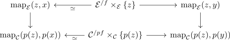

homotopy cartesian diagram for the postcomposition with a p-caretsian morphism
Proposition
Let $p: \mathcal{E} \rightarrow \mathcal{C}$ be an inner fibration, $f: \Delta^1 \rightarrow \mathcal{E}, f: x \rightarrow y$ be p-cartesian and $z \in \mathcal{E}$ Then

is a homotopy-cartesian diagram
Proof
Consider the diagram
Here the left horizontal morphisms are trivial fibrations

as the inclusion $\{0\} \hookrightarrow \Delta^1$ is left anodyne map by (???)
Then the right vertical map
\begin{align*}
\mathrm{map}_{\mathcal{E}}(z,y) \rightarrow \mathrm{map}_{\mathcal{C}}(p(z),p(y))
\end{align*}
is a kan fibration by isofibration induces kan fibration on mapping spaces (why isofib ???)
Then TODO